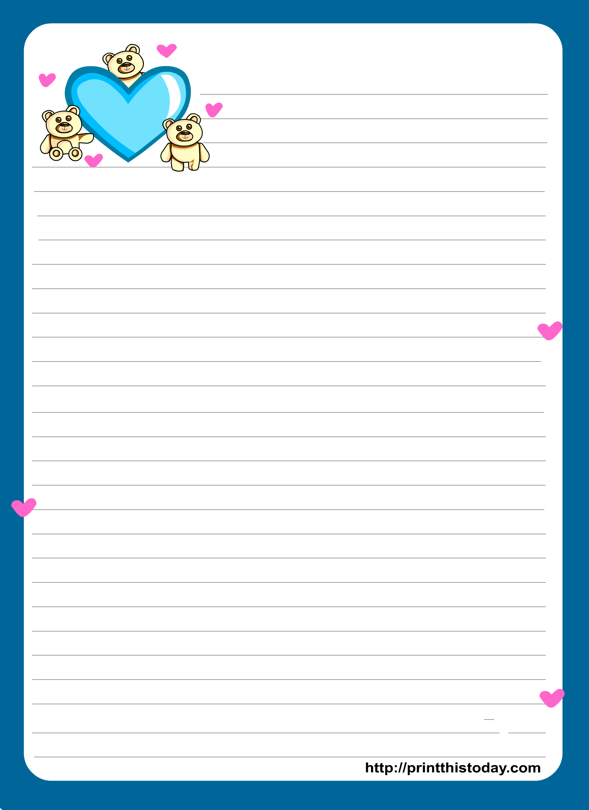

Turn up the music volume
Hi Jess, I know there might be a lot of things on your mind, but today, I just want to take a moment to tell you how special you are to me. There's something I've been wanting to say for a while now...
If you ever ask why I fell for you, I'll tell you: it was inevitable. I built walls around my heart, tried to convince myself that I could resist. I even avoided you, thinking that absence would make the feelings fade. But like the sun rising, like the tide coming in, my heart was drawn to you. My walls crumbled, and my heart found its way to you.
I want you to know that nothing in my past could ever change the way I feel about you. Everything I’ve been through has only led me to this moment—to you. You are not just a part of my life; you are the best part, the one I choose now and always. The past is behind me, but my heart belongs to you, and that’s the only thing that truly matters.
I always observe you— the way your hand moves as you write, how your letters curve so soft and light. Even in the smallest things you do, I find myself falling more for you.
You don't need to change a thing. Your flaws are not blemishes, they are the constellations that map the landscape of your soul. They tell a story, your story, and it's a story I want to read again and again. I'll cherish you, every star in your sky, because it's in your imperfections that I find the most breathtaking beauty.
Like Ruth choosing Boaz, I choose you—wherever life takes you, I want to be right there, walking beside you.
Like Jacob working years for Rachel, I’d wait a lifetime if it meant being with you, because love like this is worth everything.
No matter what comes our way, I’ll stand by you if you let me, just like Hosea never gave up on Gomer. Not because I’m perfect, but because this love feels bigger than just us—like something God Himself is writing.
And just like Adam saw Eve and knew she was meant for him, I look at you and feel like I’ve found the missing piece of my heart.
I’ll love you like Solomon loved the Shulammite woman, with a passion that only deepens with time
Just as the Shulammite woman's beauty captivated the heart of Solomon, your presence fills my world with wonder and awe. Your beauty is a grace and elegance that speak of a soul touched by God. It is a gift, a reminder of the beauty that exists in the world, and i will always admire it.
I hope you'll open your heart to my pursuit and allow me to court you, so I can show you the depth of my commitment and love. And just to be absolutely clear: there's no rush, no pressure. I'm happy to wait for the perfect time.
God knows how much you really mean to me. thats why i want to officially ask this to you.
Jessel Camolo
Can i court you?